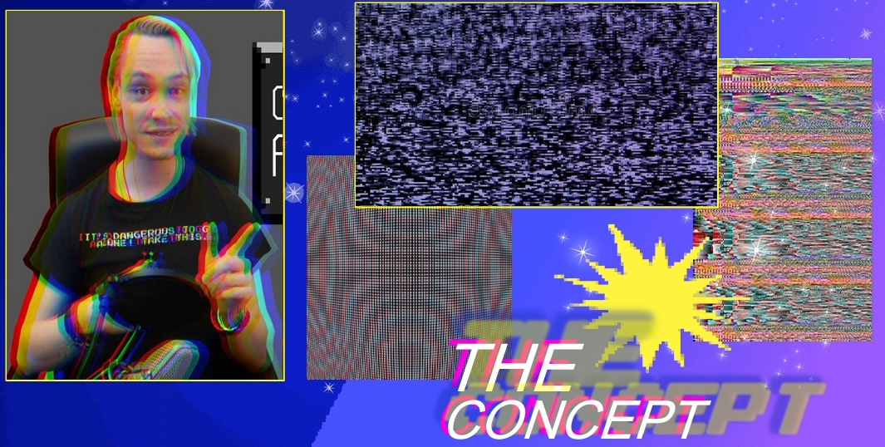
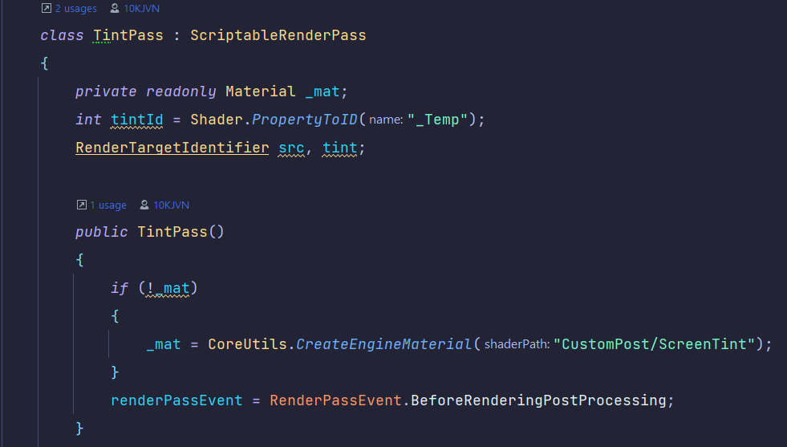
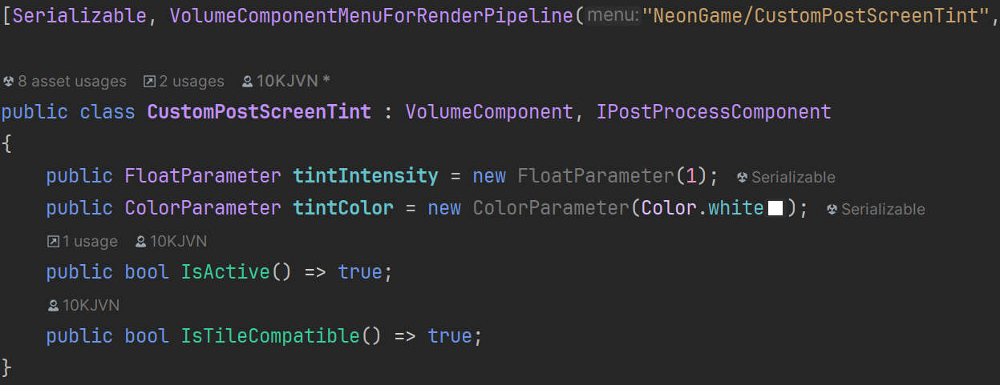
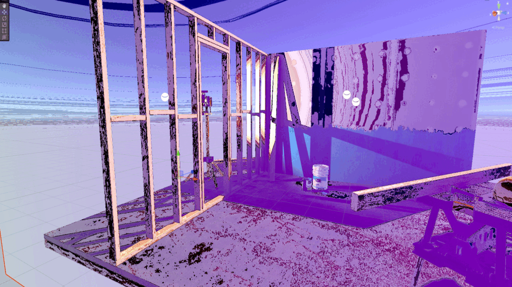
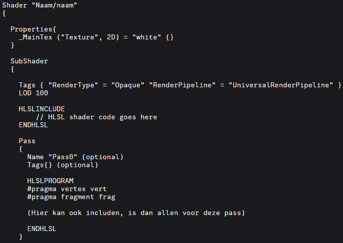
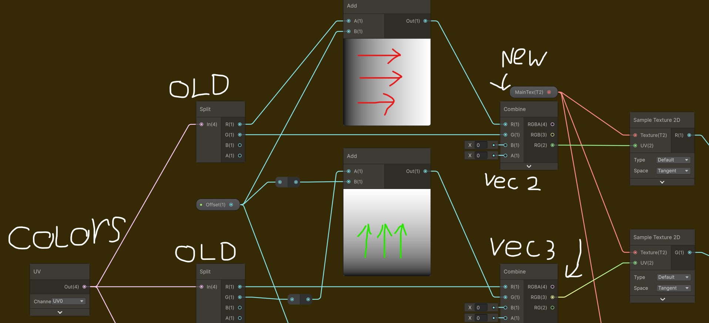
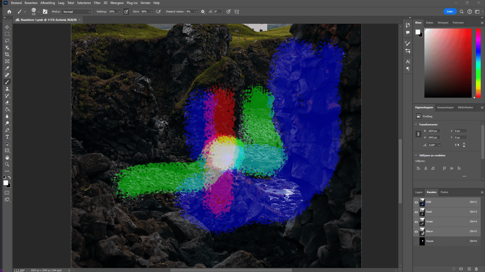
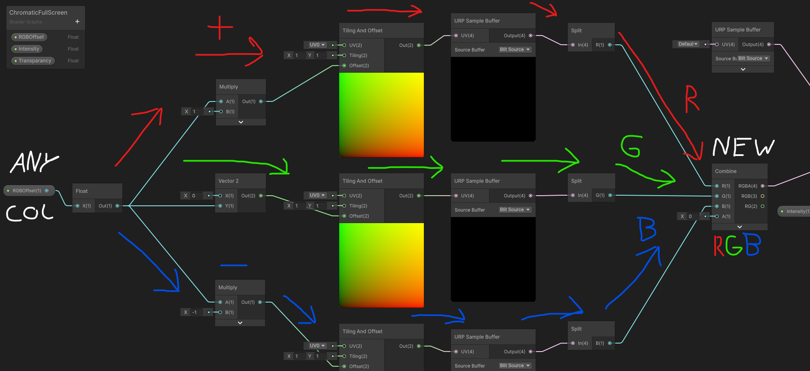
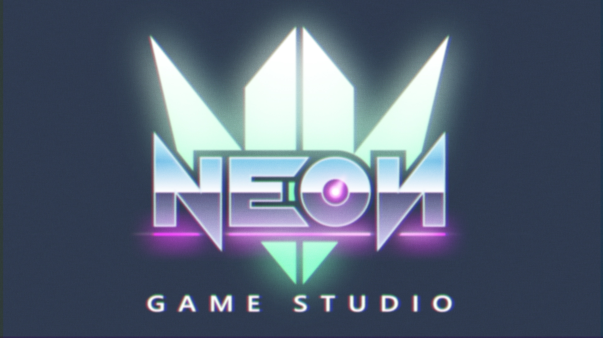

Universal Render Pipeline v2
Project Status: Finished
Project Type: Specialization
Software Used: Unity 2022.3
Languages: C#, CG, HLSL
Duration: 8 weeks
Team: Solo
About Project
During my 'Verdieping Software' elective at Neon Origins, I explored URP and shader programming. Contributing directly to the studio project Operation Starfall through shader R&D and post-processing experiments. Github
Highlights
- Custom Post-Processing System
- Chromatic Aberration Shaders
Intro
The project began from an Userstory along the lines of "I want the game to feel like watching a 80s NTSC TV." This became my starting point for learning post-processing, experimenting with ShaderGraph, and studying shader fundamentals.

Development
Implemented a Tint Renderer Feature with custom volume overrides. This allowed designers to tint the entire screen with adjustable strength.
Code Snippet: Tint Renderer

Here you see the injection of the 'Pass' into the Graphics Pipeline.
Code Snippet: Volume override

Accessible tint intensity & color in the Unity inspector.
Built a fullscreen chromatic aberration effect simulating RGB channel separation. This started by experimenting in UV space at first. Eventually evolving into a full post-processing pass with tweakable intensity.
ShaderGraph prototype: RGB channel offset per object.


Fullscreen effect: RGB channels split across the entire screen with customizable offset.
Exploration
After delivering the core features, I continued exploring shader techniques. Color Bleeding via blurred offsets, Depth Testing using normalized values, Multipass rendering, and Color Spaces. Manually converting between RGB and YUV.

Most of these resulted in glitchy, trippy visuals — but each experiment revealed something new about the rendering pipeline.
Shader Curiosity
Outside Unity, I studied shader languages and pipelines. Explored CG, HLSL and GLSL, learned how ShaderLab structures SubShaders, Passes and HLSL includes. Collected notes on shader stages (vertex, fragment, geometry, etc.), realizing I was only scratching the surface.

This exploration gave me the foundation to move from node-based workflows into handwritten shaders — a skill I now apply across graphics projects.
Results

Localized UV-space chromatic aberration prototype.

Illustration of additive RGB blending in Photoshop.
Red and green combine as expected — but blue remains a mystery?
Takeaway
This project was a turning point where I delivered two production-ready URP features. Gained practical experience with post-processing, custom renderer features and ShaderGraph. Built shader programming fundamentals that continue to shape my path.
It showed me how shader math, rendering theory and artistic direction come together — and confirmed I wanted to keep exploring the technical art side of game development.

Final fullscreen chromatic aberration effect. Annotated shader logic reveals how RGB channels were offset and recombined into a production-ready feature.
Resources
Unity URP 14.0.X Documentation:
Official URP Manual
Making a Chromatic Aberration Shader (YouTube Short):
Video Tutorial
A Review of Shader Languages (Blog):
Article by Alain Galvan
Specialization Pitch Presentation:
My original kickoff presentation.
NeoN Game Studio Logo (mentor reference):

Chromatic aberration applied directly onto a 4K logo for study reference.